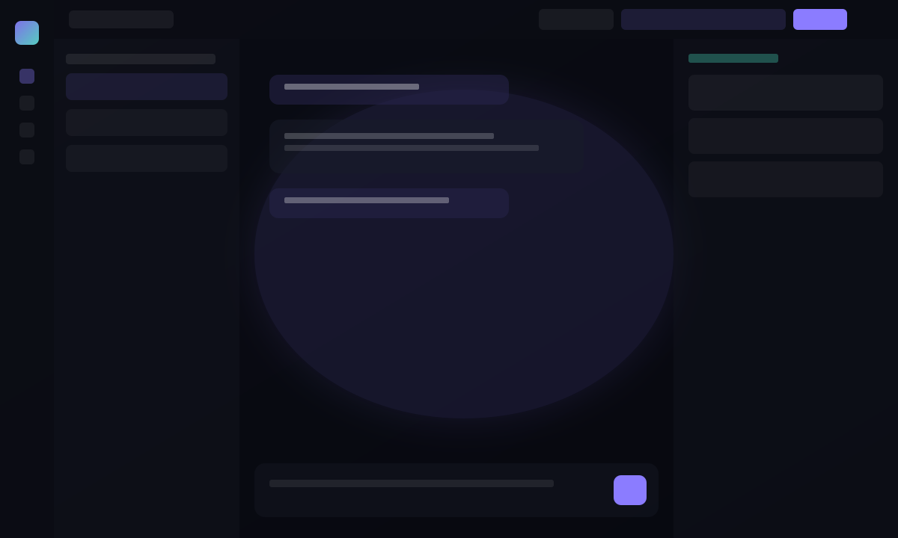

Dual runtime
Use Ollama for fast registry pulls or llama.cpp with your own
.gguf files—selected from the same top bar.
Local-first · Private · Extensible
A focused desktop shell for chatting with local models, browsing a compiled wiki from your documents, and installing weights from the Hugging Face hub or Ollama—without sending prompts to the cloud. The UI uses a cohesive dark “glass” theme with selectable accent presets, pinned metrics and download progress, and optional LoRA training hooks when you want to experiment.


Capabilities
Everything runs on your hardware. Swap backends, attach knowledge, pin the stats you care about, and keep cloud use limited to what you explicitly start (e.g. Hub downloads).
Use Ollama for fast registry pulls or llama.cpp with your own
.gguf files—selected from the same top bar.
Search curated and community models, then install with one action: prefer GGUF when available, or Safetensors with automatic pulls of config, tokenizer files, and multi-part shards into a per-model folder layout so local conversion and llama.cpp can succeed. Progress in the drawer and pinned downloads; resume uses stable resolve URLs.
Ingest sources, compile markdown wiki pages, search chunks, and surface glossary-style wiki highlights inside assistant messages—hover for context and jump straight to the article.
Optional local LoRA training for experimentation stays separate from inference. Pin metrics (memory, CPU, GPU, tokens, latency mini-charts) and activity bars alongside downloads. The interface uses a unified cosmic palette with accent presets (violet, teal, amber, rose, sky) in Settings → Appearance.
Licensing
The software is offered under the PolyForm Noncommercial License 1.0.0 plus terms naming Cyril Grossenbacher as copyright holder: noncommercial use is free; commercial use needs a separate agreement and fees. Read the full text on the license page before redistributing or deploying in a business.
View license terms